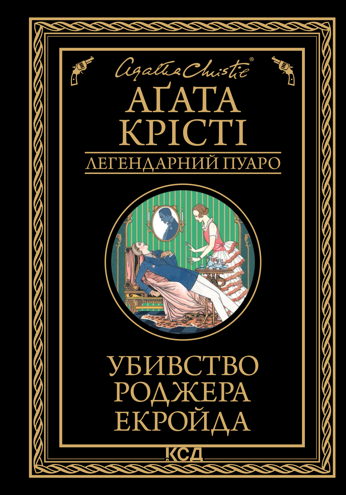
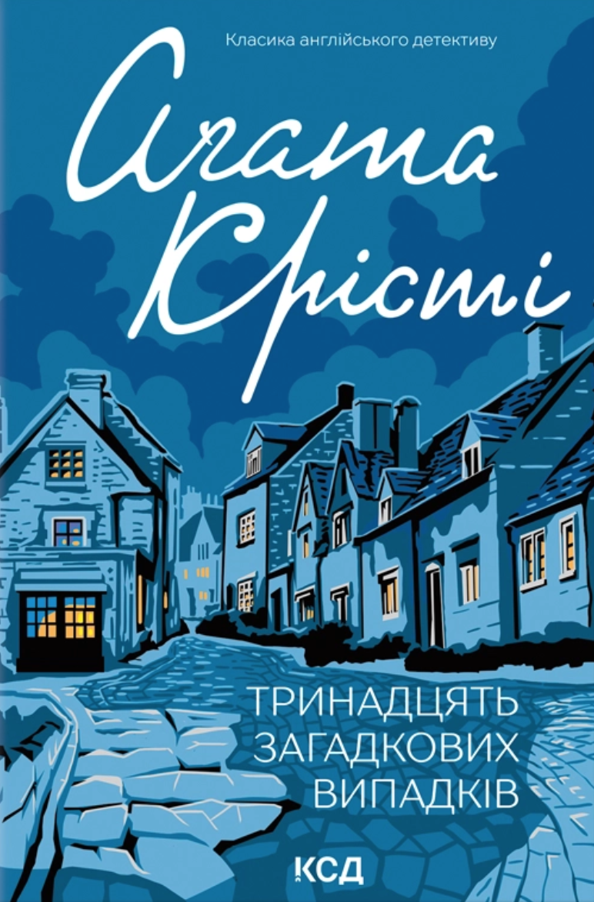
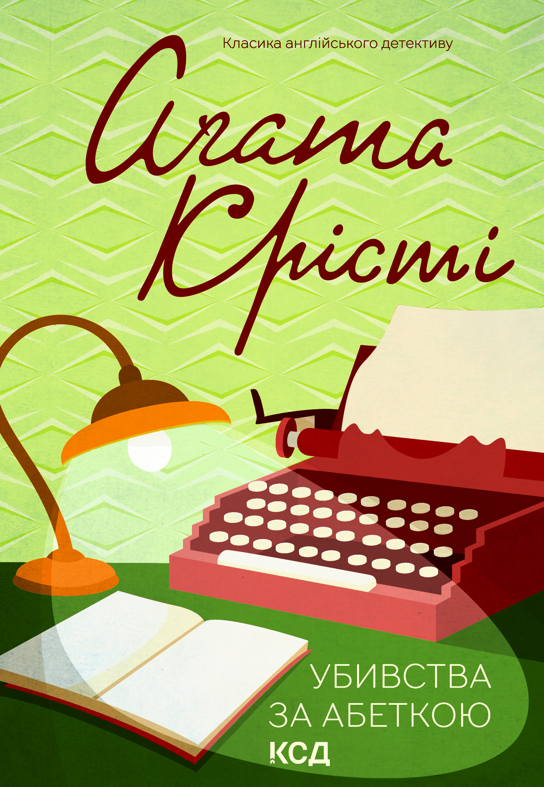
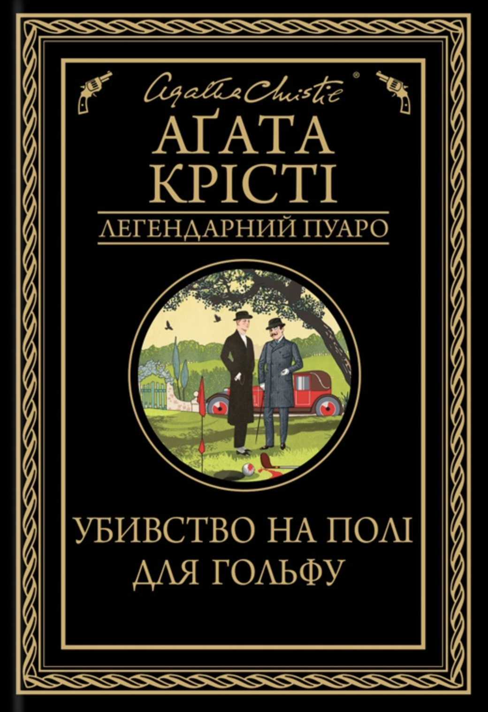
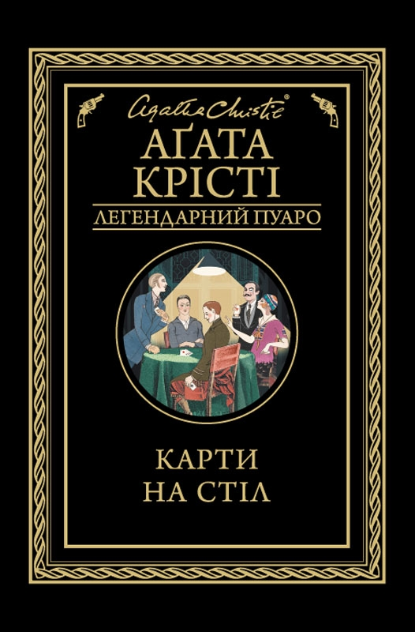
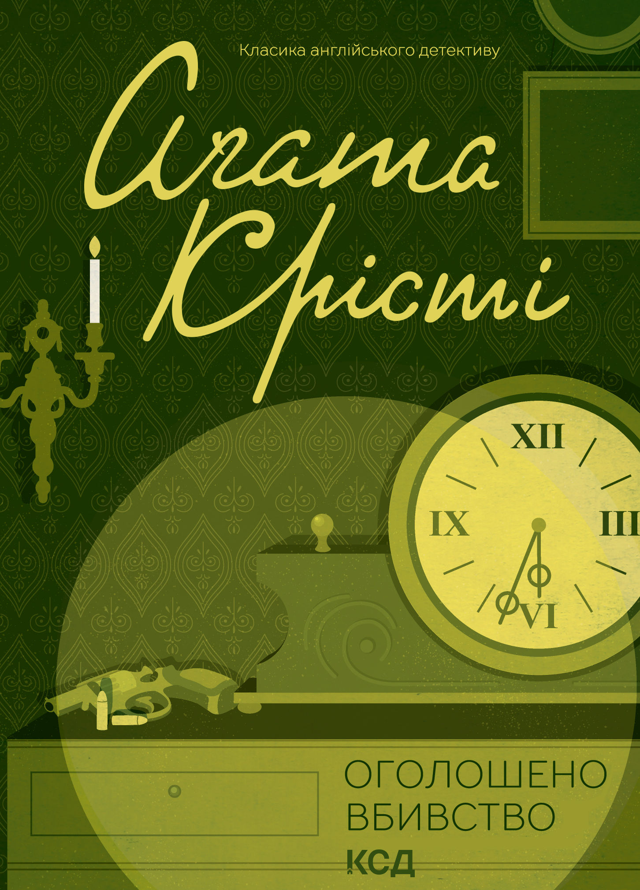
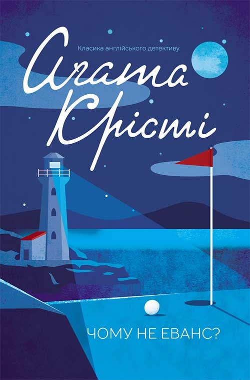
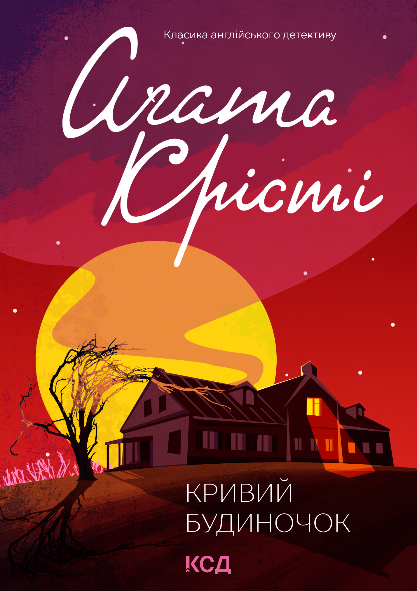
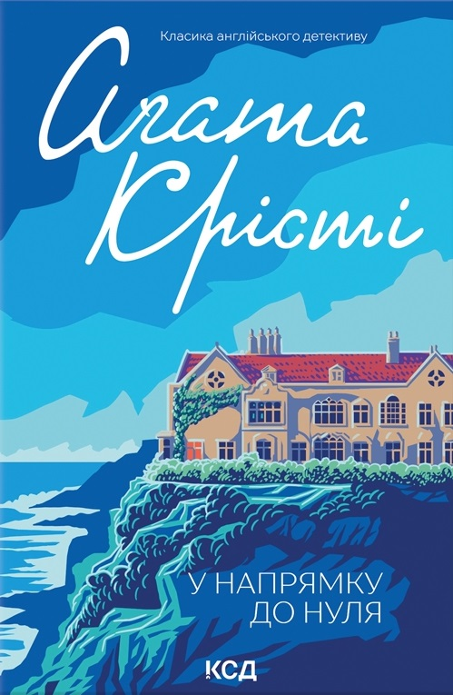

Убивство Роджера Екройда
1926
The Queen of Crime
BOOK COLLECTION
Відкрийте для себе більше детективних історій Агати Крісті.

1926

1932

1936

1923

1936

1950

1934

1949

1944
DISCOVER MORE
Еркюль Пуаро – бельгійський детектив, який розкриває злочини завдяки логіці та уважності до деталей.
Міс Марпл – літня жінка, яка розслідує загадкові справи завдяки спостережливості та знанню людської поведінки.
Капітан Артур Гастингс — вірний друг і помічник Еркюля Пуаро, який часто супроводжує його у розслідуваннях.
Агата Крісті писала переважно в детективному жанрі, а також у суміжних і супутніх напрямках:
Багато романів Агати Крісті були екранізовані для кіно й телебачення.